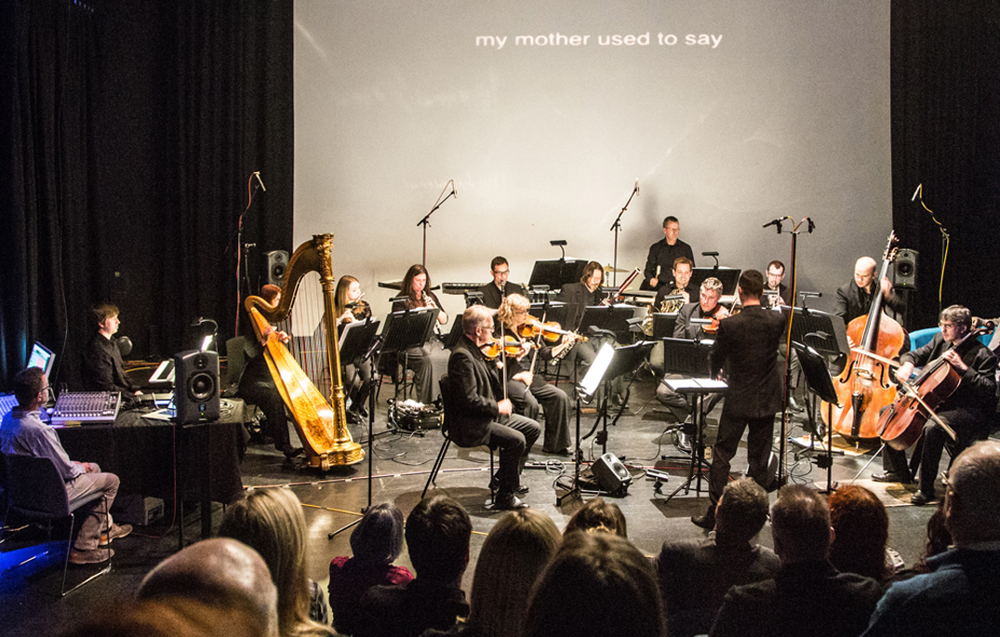

Lebenslieder
for orchestra or large ensemble with electronics
I. Daybreak
II. Nachtmusik
III. Scherzo
Date of composition: 2017
Overall duration: c. 25 min
Format: Ensemble (1.1.1.1 / 1.1.0.0 / timp.+perc. hp. / strings / electronics (doublings: picc., Eng. hn., c. bsn.)
Premiere: 19 March 2018, Bangor, Wales (UK)
Members of the BBC National Orchestra of Wales/Diogo
Costa
"Songs from Afar", Studio Theatre,
Pontio Arts Centre, Bangor, Gwynedd
Score: available
from Composers' Edition

Materials for electronics: download here

Premiere performance of Lebenslieder with members of the BBC National
Orchestra of Wales
(Photo: Iolo Penri)
Programme note: (download as PDF)
Lebenslieder is a song-symphony for orchestra or chamber ensemble with electronics. The vocal part consists of extracts from recorded interviews with people with dementia and their partners who care for them. Their voices are translated directly into orchestral material, bringing the experience of living with dementia into the concert hall, breaking the silence that often surrounds the topic, and giving voice to the real-life, day-to-day experience of what is fast becoming the defining medical condition of our age.
The work is in three movements, which may also be performed as stand-alone pieces:
Daybreak concerns the moment that those with dementia, or those close to them, first started to notice something was different: the ‘dawning’ of the realisation that there may be a ‘problem’. It also considers the subsequent reactions of family, colleagues and friends, as the reality of dementia is brought into the full light of day.
Nachtmusik reflects on the night-time experiences of people with dementia and those caring for them: difficulty sleeping, nocturnal wanderings, tiredness. It portrays that time of night when worries and concerns seem somehow magnified, and the sleeping world seems far away and indifferent.
Scherzo considers the importance of reminiscence when more recent memories are being lost, and how, for some, humour can be an important way of responding positively to the challenges of life with dementia.
The composition of Lebenslieder was funded by The Leverhulme Trust as part of a Leverhulme Research Fellowship in 2017. It was undertaken in co-operation with Professor Bob Woods of Bangor University, and the ACTIFCare research project, funded in the UK by the ESRC. The event is organised in partnership with Pontio Arts. I am grateful to Hannah Jelley (Research Project Support Officer, Bangor University), and to all the participants for sharing their thoughts and experiences: John Alderson, Sandra Alderson, Colin Davies, Judy Futter, Eric Jones, Gwen B. Meyer and two anonymous contributors.